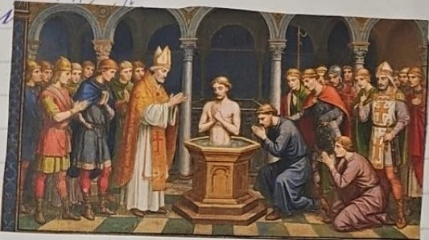
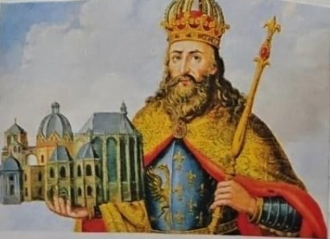
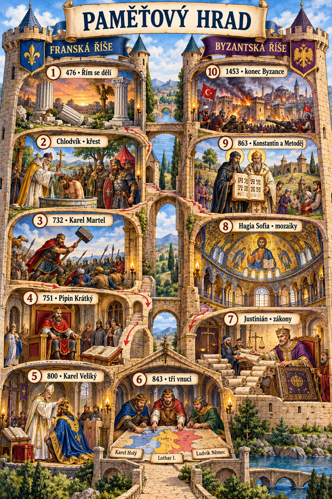
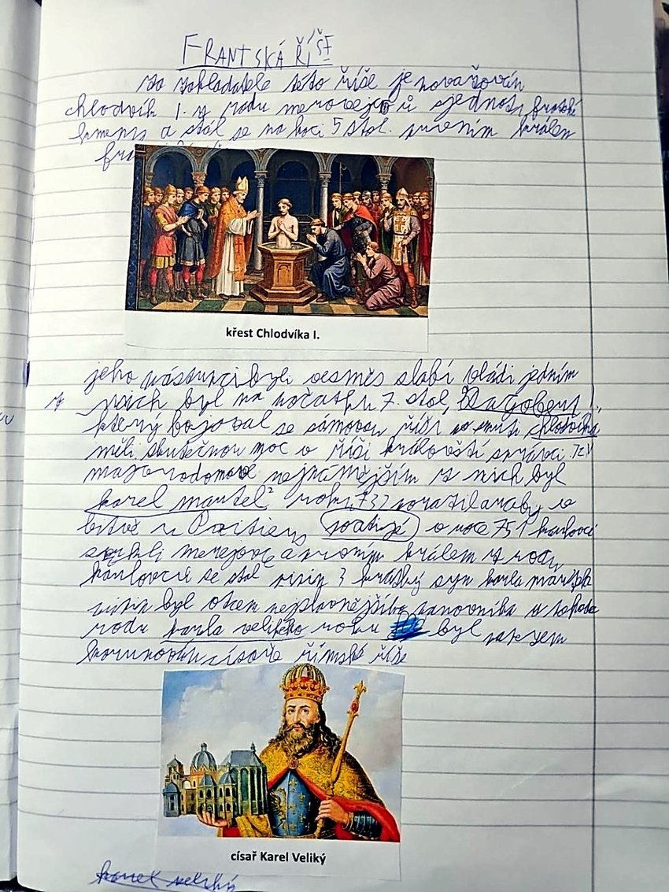
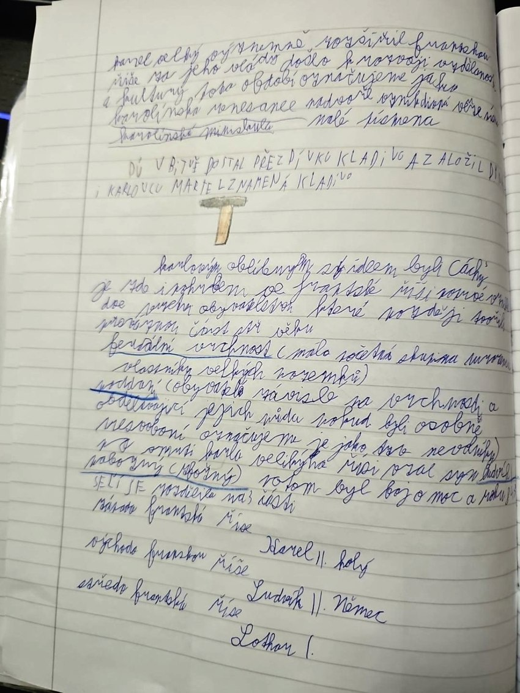

5. století – 843
Franská říše
Franskou říši založil Chlodvík I. z rodu Merovejců. Skutečnou moc pak získali majordomové a roku 751 Karlovci sesadili Merovejce. Karel Veliký byl roku 800 korunován císařem; po smrti jeho syna se říše rozdělila na tři části.
Zvýrazněné je v sešitě podtržené.
- 732 Karel Martel poráží Araby u Poitiersi v tématu Arabská říše a islám
- 751 Pipin Krátký králem; začíná vláda Karlovců
- 800 Karel Veliký korunován císařem
- 843 Verdunská smlouva: vnuci dělí Franskou říši na tři částii v tématu Svatá říše římská
Chlodvík I. a Merovejci

Za zakladatele Franské říše je považován Chlodvík I. z rodu Merovejců. Sjednotil franské kmeny a na konci 5. století se stal prvním králem Franků. Nechal se pokřtít (obrázek v sešitě).
Jeho nástupci byli většinou slabí vládci. Jedním z nich byl na počátku 7. století Dagobert I., který bojoval se Sámovou říší (Sámova říše byla první známý stát Slovanů, i na našem území).
Majordomové a Karlovci
Po smrti Chlodvíka měli skutečnou moc v říši královští správci, tzv. majordomové. Král tedy formálně vládl, ale rozhodoval jeho správce.
Nejznámějším z nich byl Karel Martel. Roku 732 porazil Araby v bitvě u Poitiers. V bitvě dostal přezdívku Kladivo: Martel znamená kladivo.
Proč je to důležité: Karel Martel zastavil postup Arabů do západní Evropy (souvislost s tématem Arabská říše a islám).
V roce 751 Karlovci sesadili Merovejce a prvním králem z rodu Karlovců se stal Pipin III. Krátký, syn Karla Martela.
Karel Veliký

Pipin byl otcem nejznámějšího panovníka tohoto rodu, Karla Velikého. Roku 800 byl Karel papežem korunován císařem římské říše.
Proč je to důležité: po zániku Západořímské říše měl západ Evropy zase císaře. Na to později navázala Svatá říše římská.
Karel Veliký významně rozšířil Franskou říši. Za jeho vlády došlo k rozvoji vzdělanosti a kultury. Toto období označujeme jako karolinská renesance (renesance = obnova). Zároveň vzniklo nové písmo, karolinská minuskula: malá písmena, jaká píšeme dodnes.
Karlovým oblíbeným sídlem byly Cáchy. Je tam i pohřben.
Souvislost: Karel udržoval styky s chalífou Harúnem ar-Rašídem, který mu poslal bílého slona (téma Arabská říše a islám).
Vrchnost a poddaní
Ve Franské říši vznikly dvě skupiny obyvatel, které pak tvořily většinu středověké společnosti:
- feudální vrchnost: málo početná skupina mocných vlastníků velkých pozemků,
- poddaní: obyvatelé závislí na vrchnosti, kteří obdělávali její půdu. Pokud byli osobně nesvobodní, říkáme jim nevolníci.
Proč je to důležité: takhle byla společnost uspořádaná po celý středověk (téma Středověká společnost a církev).
Rozdělení říše
Po smrti Karla Velikého převzal říši jeho syn Ludvík Nábožný (Zbožný). Potom nastal boj o moc a roku 843 se říše rozdělila na tři části mezi Karlovy vnuky:
| Část říše | Vnuk Karla Velikého | Co z ní později vzniklo |
|---|---|---|
| západofranská | Karel II. Holý | Francie |
| východofranská | Ludvík II. Němec | Německo, Svatá říše římská |
| středofranská | Lothar I. | pás od Severního moře do Itálie |
Paměťový obraz
Projdi v duchu levou věž hradu odshora dolů a u každé zastávky řekni, co se stalo.

| Zastávka | Obraz | Co si vybavit |
|---|---|---|
| 2 | Křtitelnice | Chlodvík: sjednocení Franků a přijetí křesťanství. |
| 3 | Kladivo | 732: Karel Martel vítězí u Poitiers. |
| 4 | Trůn | 751: Pipin Krátký se stává králem; Karlovci. |
| 5 | Koruna a knihy | 800: Karel Veliký císařem; školy a karolinská renesance. |
| 6 | Mapa rozdělená na tři díly | 843: Karel Holý západ, Lothar střed, Ludvík Němec východ. |
Vyzkoušej se
Odpověz nahlas, teprve pak otevři odpověď. Procvičit náhodně
Kdo je považován za zakladatele Franské říše a z jakého rodu byl?
Chlodvík I. z rodu Merovejců.
Co Chlodvík I. dokázal?
Sjednotil franské kmeny a na konci 5. století se stal prvním králem Franků.
Kdo z nástupců Chlodvíka bojoval se Sámovou říší?
Dagobert I. (na počátku 7. století).
Kdo byli majordomové?
Královští správci, kteří měli po smrti Chlodvíka skutečnou moc v říši.
Kdo byl nejznámější majordomus a co udělal roku 732?
Karel Martel; porazil Araby v bitvě u Poitiers.
Co znamená Martel?
Kladivo.
Co se stalo roku 751?
Karlovci sesadili Merovejce; prvním králem z rodu Karlovců se stal Pipin III. Krátký.
Čí syn byl Pipin Krátký a čí otec?
Syn Karla Martela, otec Karla Velikého.
Co se stalo roku 800?
Karel Veliký byl papežem korunován císařem.
Jak se nazývá rozkvět vzdělanosti a kultury za Karla Velikého?
Karolinská renesance.
Jaké nové písmo vzniklo za Karla Velikého?
Karolinská minuskula, malá písmena.
Které město bylo Karlovým oblíbeným sídlem?
Cáchy, je tam i pohřben.
Které dvě skupiny obyvatel vznikly ve Franské říši?
Feudální vrchnost (mocní vlastníci velkých pozemků) a poddaní (závislí na vrchnosti, obdělávali její půdu).
Jak říkáme osobně nesvobodným poddaným?
Nevolníci.
Kdo převzal říši po smrti Karla Velikého?
Jeho syn Ludvík Nábožný (Zbožný).
Na jaké tři části se říše rozdělila a kdo je dostal?
Západofranská: Karel II. Holý; východofranská: Ludvík II. Němec; středofranská: Lothar I.
Jaký dar dostal Karel Veliký od chalífy Harúna ar-Rašída?
Bílého slona.
Jak vysoký byl Karel Veliký?
Asi 184 cm, vyšší než 99 % lidí své doby.
Kdo napsal životopis Karla Velikého a jak se jmenuje?
Einhard, Vita Karoli Magni.
Proč si Karel dával tabulky na psaní pod polštář?
Psaní mu nešlo a chtěl ho procvičovat.
Zápis ze sešitu
Fotky stránek sešitu

